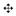

Puede
archivarse como imagen, la Vista Gráfica de cualquier construcción.
Atención: Se guarda la imagen completa de la Vista Gráfica.
Por eso, cuando
sólo interesa una zona de la construcción conviene, previamente, apelar a…
·
… las
herramientas pertinentes,  Desplaza
Vista Gráfica, Zoom de Acercamiento,  Zoom de Alejamiento , hasta
ubicar la construcción en la zona superior izquierda de la Vista Gráfica y entonces, reducir la ventana de GeoGebra arrastrando
sus extremos y/o bordes con el ratón o mouse.
Zoom de Alejamiento , hasta
ubicar la construcción en la zona superior izquierda de la Vista Gráfica y entonces, reducir la ventana de GeoGebra arrastrando
sus extremos y/o bordes con el ratón o mouse.
·
… al Zoom de Selección Rectangular para
especificar qué parte quedará enfocada en la Vista Gráfica antes de guardarla como imagen.
·
…
crear un par de puntos denominados Exporta_1
y Exporta_2, que determinarán sendos
vértices opuestos del Rectángulo de Exportación
Atención: Los puntos Exporta1
y Exporta2 deben marcarse
en el área visible de la Vista Gráfica.
En el Menú Archivo, la opción ‘Vista Gráfica como Imagen’ del ítem
‘Exporta’ despliega una ventana de diálogo en que se puede especificar el ‘Formato’,
‘Escala’ (en cm) y ‘Resolución’ (en dpi) de la imagen guardada en el archivo gráfico
al que se la exporta
Atención: La medida efectiva de la imagen aparece
en la ventana de exportación, debajo de los botones mencionados, expresada
tanto en centímetros como en pixels.
Se profundiza en
la información al respecto en la sección Exporta Vista Gráfica como Imagen.
Hay diferentes
maneras de copiar la Vista Gráfica al
llamado portapapeles. Seleccionando, clic
mediante…
·
… el
ítem ‘Copia
la Vista Gráfica al Portapapeles’
del Menú
Edita
·
… ‘Copia Vista Gráfica el Portapapeles’, una de la opciones del ítem ‘Exporta’ del Menú Archivo
·
… el
botón ‘Portapapeles’ de la ventana de diálogo de ‘Exporta Vista Gráfica como
Imagen’ de la opción Copia Vista Gráfica como Imagen (png, eps)…)
del ítem Exporta del Menú Archivo
Cualquiera de
estas maniobras, lleva al portapapeles del sistema una copia de captura de
pantalla de la Vista Gráfica, como
imagen con formato PNG (ver Formato PNG). Este imagen puede
pegarse en otros documentos (por ejemplo. los elaborados con un procesador de
textos).
Atención: Para exportar una construcción fijando determinada
escala (en cm), basta con seleccionar la opción  ‘Vista
Gráfica como Imagen’ del ítem Exporta del Menú Archivo, (ver Exporta Vista Gráfica
como Imagen).
‘Vista
Gráfica como Imagen’ del ítem Exporta del Menú Archivo, (ver Exporta Vista Gráfica
como Imagen).